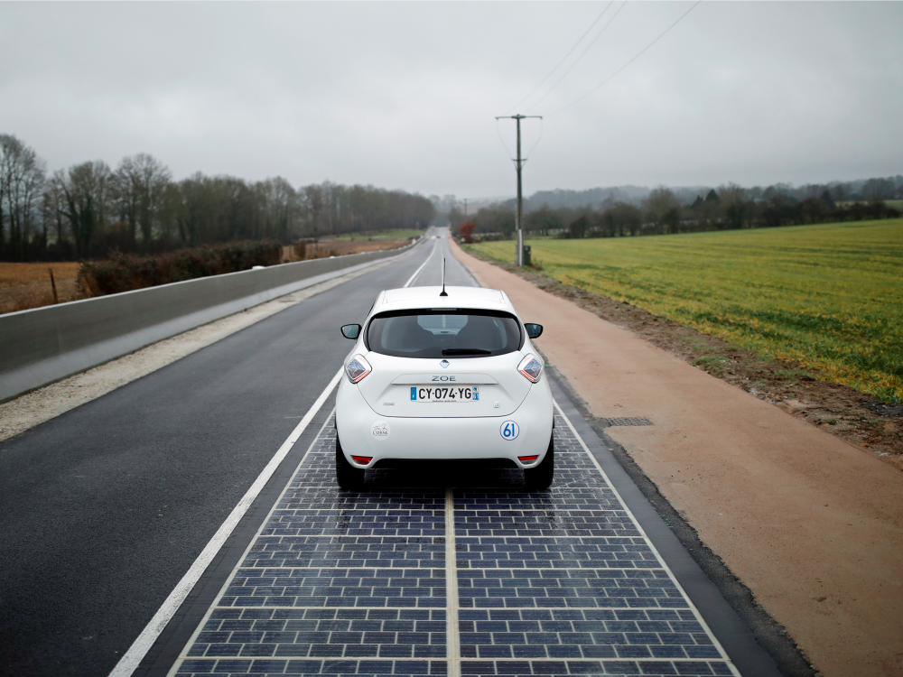
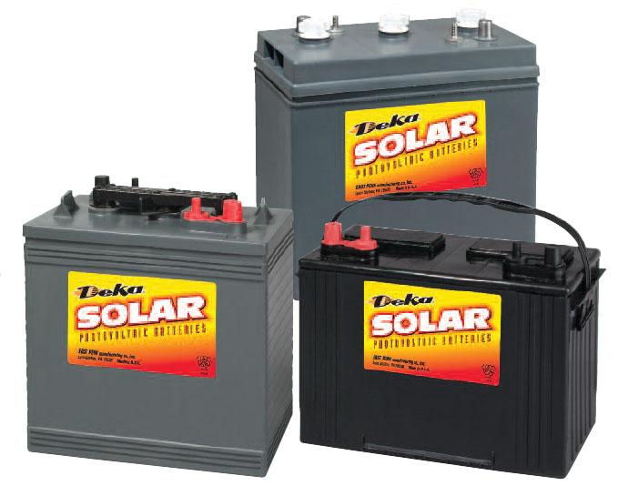

Technology
Solar skin design
One major barrier for the solar industry is the fact that a high percentage of homeowners consider solar panels to be an unsightly home addition. Luckily, one new venture has a solution. Sistine Solar, a Boston-based design firm, is making major strides with the concept of aesthetic enhancement that allow solar panels to have a customized look. The MIT startup has created a “solar skin” product that makes it possible for solar panels to match the appearance of a roof without interfering with panel efficiency or production. Sistine Solar’s skin product was expected to hit U.S. markets in 2018 and will help to rebrand solar panels as a luxury product, not just a home efficiency upgrade.

Wearable solar
Though wearable solar devices are nothing new (solar-powered watches and other gadgets have been on the market for several years), the past few years saw an innovation in solar textiles: tiny solar panels can now be stitched into the fabric of clothing. The wearable solar products of the past, like solar-powered watches, have typically been made with hard plastic material. This new textile concept makes it possible for solar to expand into home products like window curtains and dynamic consumer clean tech like heated car seats. This emerging solar technology is credited to textile designer Marianne Fairbanks and chemist Trisha Andrew.

Solar powered roads
Last summer paved the way for tests of an exciting new PV technology – solar powered roads. The sidewalks along Route 66, America’s historic interstate highway, were chosen as the testing location for solar-powered pavement tech. These roadways are heralded for their ability to generate clean energy, but they also include LED bulbs that can light roads at night and have the thermal heating capacity to melt snow during winter weather. The next stop following sidewalk tests is to install these roadways on designated segments of Route 66.
Solar batteries: innovation in solar storage
The concepts of off-grid solar and solar plus storage have gained popularity in U.S. markets, and solar manufacturers have taken notice. The industry-famous Tesla Powerwall, a rechargelithium-ionm ion battery product launched in 2015, continues to lead the pack with regard to market share and brand recognition for solar batteries. Tesla offers two storage products, the Powerwall for residential use and the Powerpack for commercial use, and the clean auto behemoth is expected to launch its Powerwall 2.0 product in weeks to come. Solar storage is still a fairly expensive product in 2019, but a surge in demand from solar shoppers is expected to bring significantly more efficient and affordable batteries to market in 2019.